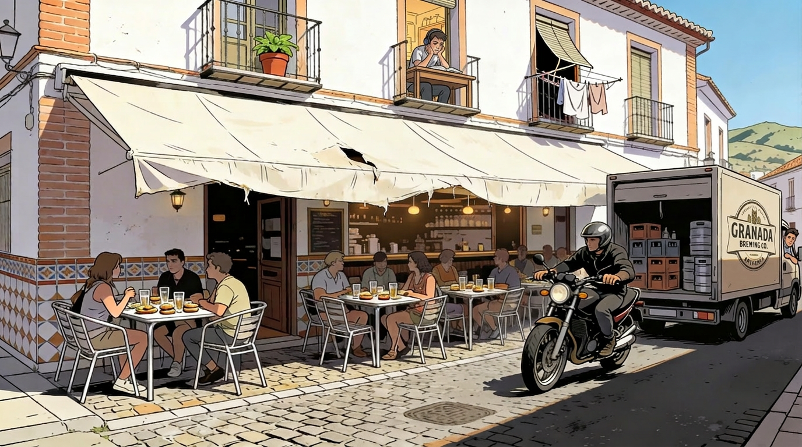

The Citizen Without Leisure
Health, Noise, and the Vanishing Conditions of Well-Being
The right to walk through one’s own city without ambient sound levels that would be considered grounds for complaint in an industrial workplace is not, technically, listed among the fundamental rights of European citizenship. This is an oversight that the data are making increasingly difficult to ignore.
The expression citizen without leisure is not meant ironically, although the irony is available if one wants it. It refers to a precise condition: the inhabitant whose hours outside paid work are spent attempting to perform an unproductive activity — walking, sitting in a park, reading at a window, sleeping, preparing for an examination — in conditions that the city has steadily made unfit for that activity. The condition is not dramatic. It is the slow withdrawal of a particular kind of provisioning that the urban environment is supposed, when it is functioning as a city rather than as a service platform, to deliver as a matter of course.
One should begin with what does not surprise the resident any longer, which is the traffic baseline. The depopulation of Granada’s central districts over the last fifteen years — well documented and not disputed even by those whose interests it serves — has had no observable effect on the ambient acoustic conditions of the same districts. Whatever the arithmetic of resident departure has been, the arithmetic of vehicle throughput has more than absorbed it. The principal access roads remain congested at the predictable hours; the roundabouts at the entries to the autovía have, as the previous chapter noted, been quietly reconverted into collectors whose acoustic emission is continuous; and the cobbled streets of the historic perimeter contribute a particular and underappreciated effect, in which a single passing motorcycle produces a sound profile roughly equivalent to that of several vehicles on conventional asphalt. The cobbles are charming. They are also, considered as a surface, an amplifier.
Onto this baseline the city has, over the same period, encouraged the proliferation of outdoor hospitality terraces with what one can only describe as a notable absence of restraint. Their distribution across the central streets and squares is not, in any obvious sense, the result of planning; it has the character of a network deployed by trial and error to intercept passing pedestrians by something close to physical capture. Once captured, and after the second or third round, the captured contribute their own share to the sound field, and the field rises accordingly. This is not a complaint about the captured. It is an observation about the geometry of the network and about the silence of the regulatory record concerning its acoustic externalities.
The parks in which a citizen might attempt to escape the foregoing arrangement are themselves arranged in a way that makes escape conditional. The Parque Federico García Lorca, the largest of the central green spaces, is bounded on its longer side by an autovía of three lanes in each direction, one of which is an uphill on-ramp fed by a roundabout of the kind described in the previous chapter; the driver who emerges from that roundabout, having survived it, accelerates onto the on-ramp with the particular conviction of a man asserting both his relief and his determination to match the speed of the traffic he is joining, and the park receives the result. On the opposite side the same park is hemmed in by the three operative lanes of Calle Arabial, which on certain afternoons present themselves to the pedestrian as four. The noise gradient from these two borders inwards is such that respite is available only within a relatively small interior core, the size of which the regular user learns to estimate without the aid of a meter.
The smaller green spaces are organised on a similar logic with the proportions reversed. Those between the Paseo de los Basilios and the Paseo del Salón–Paseo de la Bomba, the dispersed pockets of the Serrallo such as the Parque García Arrabal, and the Parque Tico Medina are too narrow in their busiest stretches for the passage of even a single moped to leave the bench-sitter undisturbed; in the Tico Medina, the additional courtesy of six autovía lanes along the broader side has been incorporated into the design. The Parque Lagos has been provided with one of the busiest roundabouts in the city at one of its corners, and the Parque Carlos Cano labours under an arrangement of similar inspiration. The arithmetic of perimeter to area is not in the citizen’s favour. The parks are real, well-maintained and adequate to look at; what they lack is the buffer that would let them perform the function for which the citizen had hoped to use them.
I notice that I am beginning to sound aggrieved, which is the wrong register for the argument. The personal annoyance of one resident with a normally functioning auditory system and a flat with reasonable insulation is not an indicator of anything in particular. It is, at best, the prompt that sends one to look for the indicator. The indicator exists.
The World Health Organization’s Environmental Noise Guidelines for the European Region (2018) recommend that road-traffic noise exposure remain below 53 dB Lden by day and 45 dB Lnight by night, on the explicit grounds — the document is unusually direct on the point — that exposures above these thresholds are associated with increased risks of cardiovascular disease, sleep disturbance, cognitive impairment in children and the kind of chronic stress responses that are difficult to reverse once established.
The WHO thresholds are a floor and not a ceiling, and the subsequent literature has developed them in directions the original document deliberately left open (Jarosińska et al., 2018). Particular attention has been paid to the effect of ambient noise on cognitive performance in school-age children (Gheller et al., 2023), and one might reasonably extend the concern beyond the schoolroom: whatever auditory sensitivity attenuates after the age of twenty, the corresponding need for cognitive calm does not, because the tasks demanded by serious study and by skilled professional work compensate by becoming more exacting rather than less (Razai et al., 2025). At any age, sleep interference produces effects on mood and on reflexes whose consequences are not confined to the bedroom — a fact that may go some way towards explaining what happens, at certain hours, at the roundabouts described in the previous chapter.
The European Environment Agency’s most recent aggregate audit estimates that approximately twenty-two million Europeans experience chronic high annoyance from environmental noise and around six and a half million experience chronic sleep disturbance attributable to it (2020). Granada’s strategic noise map, prepared as required under the European Noise Directive (2002), identifies a substantial fraction of the central and ring-road population as exposed to levels above the WHO road-traffic threshold by day, and a smaller but clinically significant fraction as exposed above the night threshold. The translation from those figures to the experience of the resident is not difficult. It is the translation the chapter has been quietly performing throughout.
The attentive observer will have noticed that the parameters above worsen perceptibly each weekend, in every season, and that they worsen further between March and October when the weather is good enough to make the outdoor rounds attractive. The same observer will have noticed that the shaded zones — the only patches of central Granada where the summer afternoon does not require physical retreat — are also the zones where the lucrative activity of terraces and restaurants concentrates with the greatest density. The unproductive aspirations of the stroller and the productive operations of the hospitality sector compete for the same square metres, and the question of which has the prior claim is settled, in practice, by which is paying the licence fee.
The dimension of all this that interests me most, because it is the one in which the cost is least visible and most consequential, is the one borne by students. A non-trivial share of the central housing stock that has not yet been converted to short-term tourist accommodation is rented to undergraduates, and a non-trivial share of those flats sit directly above, beside, or within audible range of the bars and terraces whose busiest hours coincide with the hours that the students depending on those flats need to read, write and sleep. The walls of those flats are the walls Spanish residential construction conventionally provides, which is to say that they support furniture and people but offer almost no resistance to a normal conversation, the operation of an ordinary domestic appliance, or the accumulated noise of a third round on the street below. It will not surprise the reader to learn that the principal demand of the student representative bodies of the Universidad de Granada, repeated across at least five successive cohorts of delegates — which is to say across two decades — has been the provision of adequate study rooms: silent, ventilated, of regulated temperature. The persistence of the demand is the most reliable indicator of the persistence of the conditions that produce it.
The temptation here is to translate this into a programme — quiet zones, terrace caps, decibel limits at source, study-room provision as a municipal obligation — and the temptation should be resisted, at least within the covers of this volume, because the moment the argument becomes a list of demands it will be misread as a list of demands and the underlying point will disappear. The underlying point is descriptive: a city that has stopped being able to provide silence to those whose work requires it has stopped being able to perform one of its quieter and more important functions. Sennett’s account of the city as a setting in which strangers sustain coexistence through minimally shared codes (2018) is, among other things, an account of what a city loses when those codes — including the unwritten one about not shouting beneath another person’s window past midnight — cease to be enforced even by mutual recognition.
The third correction, and the last, is the one I find hardest to make. It is the suspicion that I am describing a condition that has always been present in Mediterranean cities and that the difference is in my own diminishing tolerance for it rather than in the city. I have tested the suspicion against the only available control, which is the testimony of long-resident neighbours older than I am and with no professional incentive to complain, and the test does not support it. They report, with the consistency of people who have not co-ordinated their stories, that the conditions have changed, that the change is recent, that it has accelerated, and that it is not, in any obvious sense, reversible without an intervention that they have stopped expecting anyone to make. The body, in the end, is the indicator that the policy documents have not yet learned to read.

Plate V. Bar terrace, residential street, Granada, midday. The establishment operates under a canopy in a condition that suggests long acquaintance with the elements. Eight patrons are seated; drinks and food have been served; the social function of the perimeter is, by any measure, being fulfilled. A motorcycle negotiates the cobbles at a volume proportionate to its displacement. To the right, a Granada Brewing Co. delivery vehicle has reversed to the kerb with the precision available to it. On the first floor, a figure wearing headphones leans from the window in a posture that does not indicate leisure. The headphones appear to be doing their best.